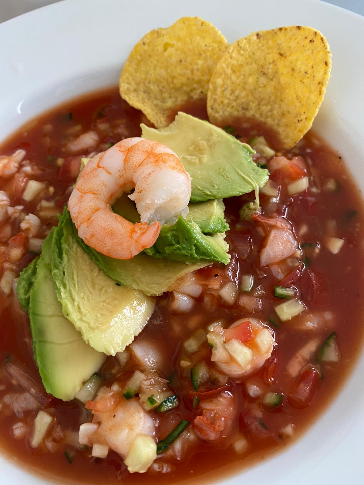

Mexikansk ceviche med räkor
Information om receptet
I denna traditionella mexikanska rätt serveras citronmarinerade räkor med lök, gurka och koriander. Så fräscht och gott!
Sammanfattning av recept
- Portioner
- 4
- Tid
- 30 min
- Svårighetsgrad
- Lätt

Huvudrecept
Ingredienser
- 450 g räkor, skalade och rensade
- 2,5 dl citronjuice
- 1 (300 g) gurka
- ½ (55 g) lök, tunt skivad
- 1 jalapeño, färsk, urkärnad
- 14 g färsk koriander
- 1 tsp salt
- 1 pinch mald svartpeppar
- 1 avokado
Gör så här
- Lägg de skalade räkorna i en skål. Häll över 3/4 av citronjuicen så räkorna täcks helt. Låt marinera i kylskåpet i minst 30 minuter.
- Skala gurkan under tiden, spara lite av skalet på gurkan om du vill. Halvera gurkan på längden och ta bort fröna med en sked. Skär i tunna skivor. Sätt åt sidan.
- Mixa jalapeño, koriander och resten av citronjuicen i en blender eller matberedare. Krydda med salt och peppar. Häll över såsen i en skål.
- Ta upp räkorna ur citronjuicen och lägg dem i skålen med jalapeñosåsen. Tillsätt lite av citronjuicen.
- Blanda ner gurkan och rödlöken. Dekorera med skivor av avokado innan servering.